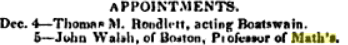
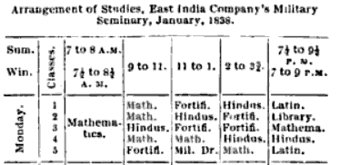
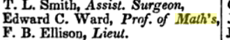

Math vs Maths ... and more
Mathematics is often shortened to "Math" in the US and "Maths" in the UK.
- Math is a good way to shorten Mathematics (chop off the letters)
- Maths is also a good way to shorten Mathematics (both end in s)
They are both OK!
It is simply a historical thing.
Mathematics was sometimes written as Math's or Math. to save space:

From "Army and Navy Chronicle, and Scientific Repository"
Washington City, 1837

From "Statistics of the Colonies of the British Empire"
London, 1839

From "The Naval Magazine, Volume 1"
United States Naval Lyceum, 1836
Then people started saying one version or the other, and "math" took hold in the US while "maths" took hold in the UK.
Today different countries use one style or the other. Australians mostly say "Maths", Canadians mostly say "Math".
Why the s in Mathematics?
The Greeks use mathimatiká, which means "all the mathematical things". That got translated to Mathematics (a similar thing happened to Physics, Economics, and so on).
It is a "mass noun" like sugar or luggage, so it refers to "all the parts" and is singular.
So we say mathematics is fun (not mathematics are fun).
And we also say maths is fun and math is fun, too!
More Differences
It would be fine if it stopped there, but it doesn't. There are more language differences we have noticed:
Common Fractions:
US
Vulgar Fractions:
UK
Consecutive Interior Angles:
US
Co-interior angles:
Canada, Australia, UK, NZ
Least common multiple:
US
Lowest common multiple:
Australia, UK
PEMDAS:
US
BODMAS:
UK
BEDMAS:
Canada
Standard Form (of a number): UK
Scientific Notation: US
Trapezium / Trapezoid:
UK
Trapezoid / Trapezium:
US
(Trapezium and Trapezoid definitions are swapped over between US and UK)
Vertical Angles:
US
Vertically Opposite Angles:
Australia
Meter, Liter: US
Metre, Litre: UK
Please contact us if you want to add more, or make a correction (but there are differences WITHIN Countries, too!)